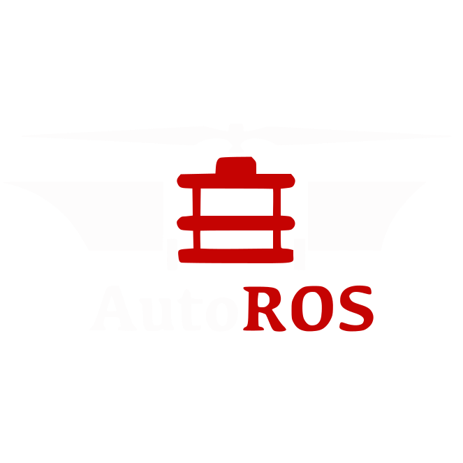

Εργασιακή Εμπειρία
 System Administrator (Πρακτική) - Lancom
Ltd. (Nov. 2022 - Present)
System Administrator (Πρακτική) - Lancom
Ltd. (Nov. 2022 - Present)
* Διαχείριση και συντήρηση πολλών διακομιστών Linux και Windows, συμπεριλαμβανομένης της
ρύθμισης κοινών υπηρεσιών, όπως DNS, webservers, webmails, hosting panels και πίνακες
επιτήρησης, τόσο σε «bare-metal» όσο και σε Docker ή Kubernetes.
* Ρύθμιση κοινών διαμορφώσεων δικτύωσης, όπως VPN, αντισταθμιστές φορτίου και proxies
* Παροχή τεχνικής υποστήριξης σε πελάτες
* Συγγραφή καλού documentation
 System Administrator - Aristotle Space & Aeronautics
Team (Jan. 2021 - Mar. 2022)
System Administrator - Aristotle Space & Aeronautics
Team (Jan. 2021 - Mar. 2022)
* Διαχείριση των υπηρεσιών της ομάδας με υψηλή απόδοση και αξιοπιστία (>99.85% uptime)
* Εγκατάσταση και τακτική ενημέρωση όλων των βοηθητικών προγραμμάτων SaaS της ομάδας
* Διαχείριση και διασφάλιση διαφόρων διακομιστών Linux και υπολογιστικών περιβαλλόντων,
συμπεριλαμβανομένων υπηρεσιών όπως Apache2, Nginx, MySQL, OpenLDAP
* Παροχή γρήγορης υποστήριξης ΙΤ
* Συγγραφή IT documentation για μελλοντικ@ SysAdmins της ομάδας
Avionics Engineer - Aristotle Space & Aeronautics
Team (Nov. 2019 - Mar. 2021)
* Έρευνα και προγραμματισμός αισθητήρων σε C++
* Σχεδιασμός και συναρμολόγηση πλακέτας αισθητήρων
* Έρευνα και εφαρμογή συστήματος αυτόματου πιλότου
* Ανάπτυξη λογισμικού υπολογιστικών εργαλείων
* Συγγραφή τεχνικών εγγράφων σχετικά με τη διαδικασία ανάπτυξης, καθώς και δημιουργία και
συντήρηση ενός συστήματος ταξινόμησης εγγράφων για ευκολότερη διαχείριση και αρχειοθέτηση αυτών.
Autonomous Vehicles Engineer - AutoROS Team
(Oct. 2019 - Jul. 2020)
* Ανάπτυξη λογισμικού ROS σε C++ και Python
* Έρευνα και προγραμματισμός αισθητήρων
* Συντήρηση των αυτόνομων οχημάτων
* Δημιουργία εγχειριδίου ROS για τα μελλοντικά μέλη της ομάδας
* Δημιουργία και ενημέρωση εγγράφων «ποιότητας ζωής» για την ομάδα
Εκπαίδευση
 Μηχανικών Αυτοματισμού T.E. - ΔΙΠΑΕ
Μηχανικών Αυτοματισμού T.E. - ΔΙΠΑΕ
* Εφαρμογή των επιστημονικών και τεχνολογικών μεθόδων σχεδιασμού, ανάπτυξης, κατασκευής και
λειτουργίας ηλεκτρικών, ηλεκτρονικών, υπολογιστικών, υδραυλικών και πνευματικών μηχανών, καθώς
και του αυτόματου ελέγχου τους, και σύνταξη ή επίβλεψη μελετών για έργα που αφορούν τα ανωτέρω.
* Εκτίμηση και επιμέτρηση έργων τα οποία ανήκουν σε συστήματα που περιέχουν στοιχεία αυτόματου
ελέγχου και πραγματογνωμοσύνες σε εγκαταστάσεις συστημάτων από τα ανωτέρω.
* Χρήση, προγραμματισμός, συντήρηση, ρύθμιση και προσαρμογή ηλεκτρονικών υπολογιστών,
μικροϋπολογιστών, μικροελεγκτών, PLC, CNC, ρομποτικών συσκευών και γενικού εξοπλισμού που
εφαρμόζει μεθόδους και αλγόριθμους αυτόματου ελέγχου.
Τίτλος πτυχιακής: Μετρήσεις σκέδασης με τον μικροϋπολογιστή Beaglebone για φορητούς οπτικούς
βιοϊατρικούς αισθητήρες
[Περισσότερες πληροφορίες]
Licenses, Certifications, and Awards
 Δίπλωμα Αρχηγού Χ.Α.Ν.Θ. (2016-)
Δίπλωμα Αρχηγού Χ.Α.Ν.Θ. (2016-)
* Απονέμεται από τη ΧΑΝΘ για την επιτυχή ολοκλήρωση του τετραετούς εκπαιδευτικού προγράμματος
της Σχολής Στελεχών.
 CTY Greece Talent Search Award (2013-)
CTY Greece Talent Search Award (2013-)
* Απονέμεται από το Κολλέγιο Ανατόλια Θεσσαλονίκης εκ μέρους του «Center for Talented Youth» του
Πανεπιστημίου Johns Hopkins, για υψηλή διάκριση στη λεκτική και ποσοτική ικανότητα και για το
γεγονός ότι ήταν μεταξύ των συμμετεχόντων με την υψηλότερη βαθμολογία κατά τα ακαδημαϊκά έτη
2013-2015.
 Certificate of Competency in
English (ECCE) (2012-)
Certificate of Competency in
English (ECCE) (2012-)
* Εκδίδεται από το Πανεπιστήμιο του Michigan ως επίσημη πιστοποίηση της γνώσης της αγγλικής
γλώσσας.
Τα αγγλικά είναι ούτως ή άλλως η δεύτερη μητρική μου γλώσσα, οπότε αυτό το πιστοποιητικό
διατίθεται κυρίως για να αποφύγω τη γραφειοκρατία
Volunteering
 Τοπική Οργανωτική Επιτροπή - 1η
Βαλκανική Ολυμπιάδα Φυσικής (Jul. 2019)
Τοπική Οργανωτική Επιτροπή - 1η
Βαλκανική Ολυμπιάδα Φυσικής (Jul. 2019)
Παροχή οργανωτικής και κοινωνικής βοήθειας προς τη Βαλκανική Φυσική Ένωση και την Ένωση Ελλήνων
Φυσικών για τη διοργάνωση της 1ης Βαλκανικής Ολυμπιάδας Φυσικής
 Σχολικός
Διαμεσολαβητής
Σχολικός
Διαμεσολαβητής
Συμμετοχή στην ομάδα σχολικής διαμεσολάβησης του λυκείου μου και παροχή υπηρεσιών διαμεσολάβησης
τόσο σε μεμονωμένους μαθητές όσο και ομάδες μαθητών, με σκοπό την επίλυση των διαφορών τους
Δημοσιεύματα
Πτυχιακή
* Μετρήσεις σκέδασης με τον μικροϋπολογιστή Beaglebone για φορητούς οπτικούς βιοϊατρικούς αισθητήρες (Link TBA)Proceedings
* Fabrication and Development of an Optical Biomedical Sensor, A. Bantis, M. Michailidou, E. Gkagkanis, K. Karakostas and M. E. Kiziroglou (21WOM-05)* From Microtechnology to Nanotechnology, D. Bagdatoglou, N. Balp, A. Bantis, R. Beal, Y. Carmichael, C. I. Danaskou, K. Georgiadis, M. Michailidou, A. Nikolopoulos, S. Ntemkas, D. Parastatidou, V. Petitjean, H. Schaefer and N. Traikoudis (20WOM-04)
Γλώσσες
* Ελληνικά (Μητρική)* Αγγλικά (Μητρική)
* Πολωνικά (A2)
* Γαλλικά (A2)
Δεξιότητες
C, C++, GNU/Linux, BASH, PHP, SQL, Γλώσσες PLC (LD, FBD, ST), BASIC, AVR Assembly, ARM Assembly, HTML/CSS, LaTeX, ROS, Docker, Kubernetes, AutoCAD, SolidworksΗλεκτρολογική Μηχανική, Ενσωματωμένη Μηχανική, Προγραμματισμός, Βάσεις δεδομένων, Ηλεκτρονικά, Αυτόνομα οχήματα, Σχεδιασμός με τη Βοήθεια Υπολογιστή, Αυτοματισμοί, Συστήματα Αυτομάτου Ελέγχου, Διαχείριση Συστημάτων GNU/Linux, Μικροσυστήματα, Πληροφορική, Δίκτυα
Εργατικότητα, Ομαδική Εργασία, Περιέργεια, Γραπτή Επικοινωνία, Υπευθυνότητα, Επίλυση Προβλημάτων, Δημιουργικότητα, Multitasking
Ενημερώθηκε: 2023-02-09